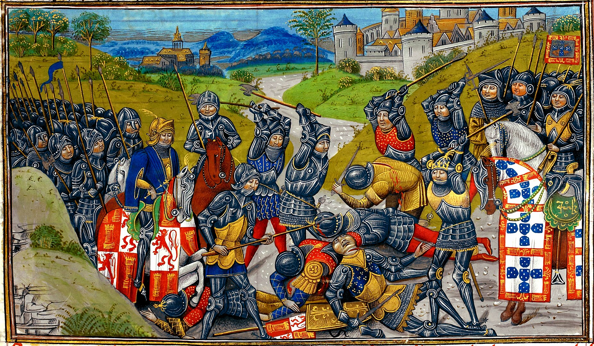
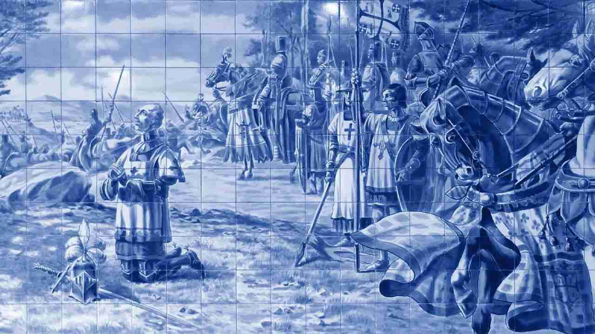

Guerreiro e Santo
Por Antonio Carlos OlivieriComemora-se a 6 de novembro o dia de São Nuno de Santa Maria, uma das figuras mais notáveis da notável História de Portugal, que não deixa de ser um pouquinho a nossa também. Antes de ser santo, Nuno Álvares Pereira foi fidalgo, cavaleiro e militar. Comandou a vitória de Portugal na batalha de Aljubarrota, em 1385, confronto que assinala a definitiva independência dos portugueses em relação ao reino de Castela.
Amigo e irmão de armas de dom João I, o fundador da dinastia de Avis, Nuno Álvares participou de diversos outros combates decisivos de sua pátria na época, o último os quais foi a batalha de Ceuta, em 1415, que marcou o início das grandes navegações portuguesas. Fernando Pessoa celebrou o militar e cavaleiro num belo poema (cujo link vai nos comentários), em que o poeta faz dele um personagem das novelas cavalaria do ciclo arturiano, ainda que fortemente enraizado no solo que Nuno ajudou a tornar português.
Das lutas de que dom Nuno participou, sempre decisivamente, merece menção a batalha de Aljubarrota, travada a 14 de agosto de 1385, confronto crucial para a independência portuguesa. Mesmo em menor número, os lusitanos derrotaram os castelhanos, sendo a escolha do terreno e a estratégia traçada por Nuno Álvares crucial para a vitória.
Também se destaca a batalha de Valverde, travada em território castelhano, dois meses após Aljubarrota. Valverde adiciona ao cavaleiro mais um componente místico: conta-se que na fase mais crítica da contenda, quando os lusos beiravam a derrota, dom Nuno havia desaparecido. Foi encontrado pouco depois, entre dois rochedos, onde estava ajoelhado a rezar. Rui Gonçalves, o companheiro que o encontrou, advertiu-o que não era hora de orações, mas de ações. Dom Nuno respondeu que sua hora não era chegada e que o aguardasse terminar suas preces.
Depois levantou-se e venceu a batalha. Simples assim. Graças aos seus feitos heroicos, tornou-se temido pelos castelhanos que selaram a paz com Portugal por muito tempo. Em recompensa, o rei lhe deu tantos títulos e propriedades que, somados aos que já tinha de família, tornaram-no o homem mais rico da pátria lusitana, de cujas terras chegou a possuir um terço. Mas o terço que interessava a dom Nuno era outro.
Patrocinador da construção de capelas e igrejas, fez construir o Convento do Carmo, em Lisboa, que lá permanece no mesmo lugar, embora destruído pelo famoso terremoto do século XVIII e reconstruído por dona Maria I, a piedosa – a avó do nosso Pedro I.
Ainda durante a construção, dom Nuno foi morar lá, depois de ter doado todas as suas posses. Pronto o convento, ingressou na ordem do Carmo como donato, o grau mais baixo da hierarquia carmelita. Queria apenas ser o mais humilde servidor da ordem. Varria o mosteiro, servia a sopa aos pobres e os evangelizava. Só não mendigou pelas ruas de Lisboa porque dom João I assim lhe pediu, lembrando-o do significado que ele tinha para o Reino.
Faleceu aos 72 anos, em 1431. O povo português de então já o considerava um santo, peregrinava a seu túmulo e alcançava graças em seu nome, do que dão testemunhos inúmeros ex-votos.
Entretanto, a Igreja demorou a reconhecer-lhe a santidade, o que só aconteceu em 2009, sob o pontificado de Bento XVI, quando um milagre foi atribuído a sua intercessão. Uma cozinheira que perdeu um dos olhos devido a um acidente no fogão recuperou a vista ao pedir pelo beato Nuno Álvares. Um milagre trivial (não para a cozinheira, é evidente), perto da vida do impressionante personagem.